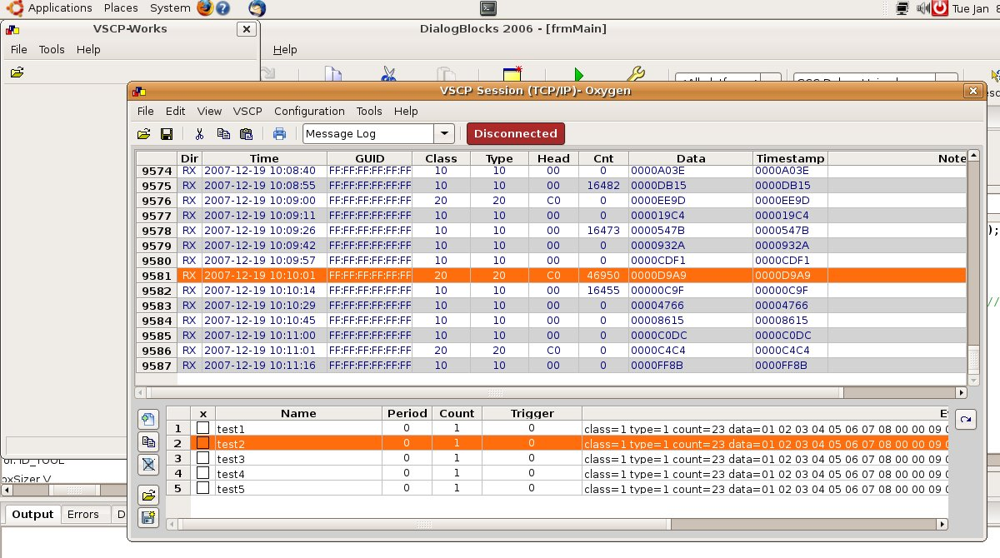
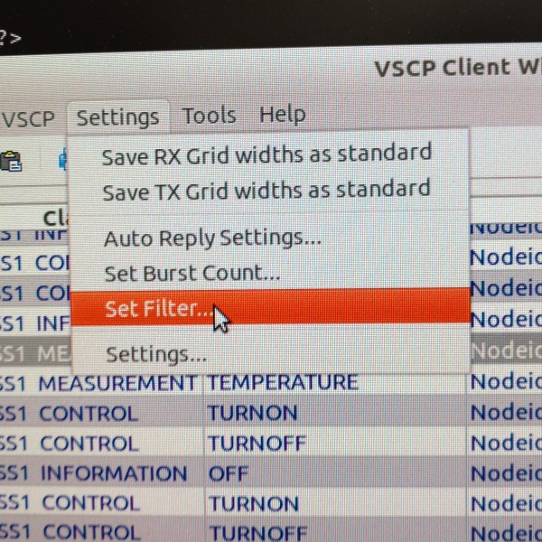
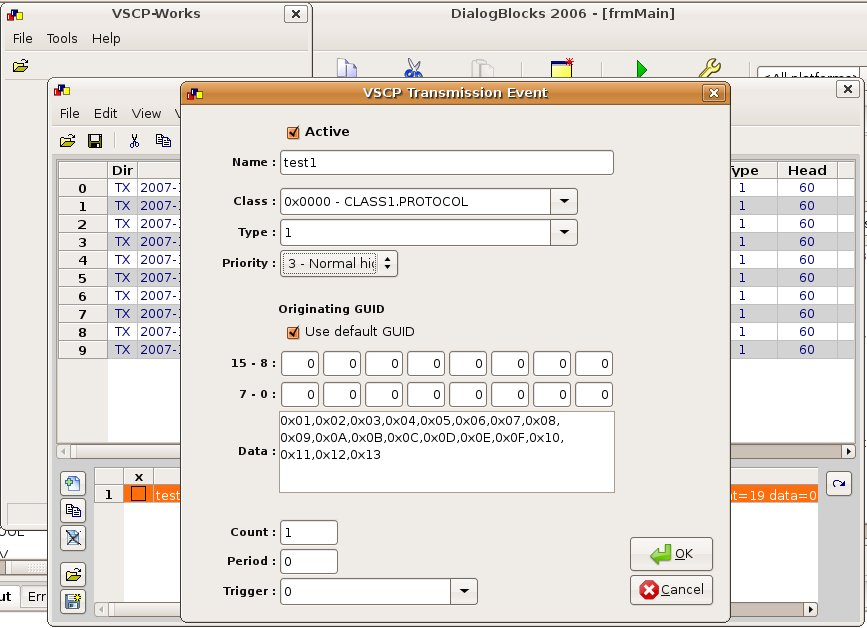
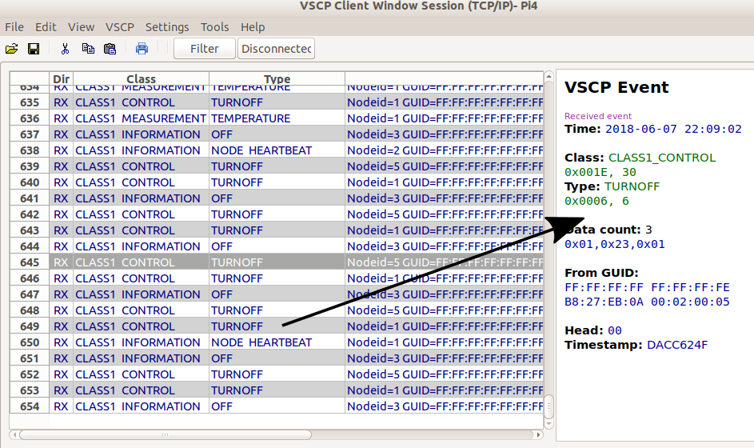

With the client window of VSCP works it is possible to open communication sessions that either connect
To open a new session windoow use the File/New VSCP Client window. You can now select a predefined interface to connect to or create a new.
Below is a picture of how this window looks on Ubuntu Linux

Remote item interfaces have “TCP/IP:” in front of them and local interface items or direct connection items to Level I (CANAL) drivers have “CANAL:” in front of them.
The first type always listed is the “Unconnected Mode” wich opens the window without a connection either to a remote server or a Level I (CANAL) driver. This is useful when one wants to investigate saved session data.
The image below shows how the Level I (CANAL) session edit window looks like on Ubunto Linux

Standard Level I (CANAL) interface settings is available here.
A Level I (CANAL) driver can have an internal XML file stored that describes the configuration string. If the driver has such information the button to the right of the configuration string can be used to run a wizard that helps in setting up both the flags field and the configuration field in an easy way without needing to find the drivers full documentation.
The image below shows how the remote TCP/IP server edit window looks like on Ubuntu Linux

The remote TCP/IP interface needs the following parameters to be defined and set
Use the Set Filter button to set an incoming filter fpr this session. Only events that satisfy the filter/mask combination will be received from the remote node.
Use the Test Connection button to test the connection to the remote node.
Selecting one of the interfaces and pressing OK (or double clicking the line) opens the session window
Ubuntu Linux session window

The session window is divided into three main areas. The upper left area is the receive list, the upper right area (when a row is selected in the receive list) is the information area and the lower area is the transmission list.
Events that are received from a remote node is listed in the receive list (Marked with RX) but also transmitted events are showed here (marked with *TX).
Currently a chronological view is available (message log). Other views may follow in the future.
By right clicking on the receive list some functionality will be available

In the menus you can
Sometimes the inflow of received events can be very large and at the same time you are only interested in some specific events. In this case you can set a receive filter.
Receive filters can be set in two ways
Well you can actually do both at the same time.
The first thing you have to do to use receive event filtering is to define a filter. You do this under the menu
/Settings/Set filter...

which will bring up this dialog window.

Here you can define the events the filter should consist off.
You can allow a full class of events to be received by adding it with type "general" to the add display event.... This is tru also for the filter.
Warning! You can end up getting nothing in the receive list if you add contaradictory settings in the two list boxes.
You can load save display/filter lists to a file on disk. Select the appropriate box before load/save. To clearify
Enable enables (selected) or disables the set filter. There is also a button in the receive windows that does the same thing

When in it's in-position the filter is active else it is inactive.

In the transmission area list rows are available that can be transmitted to the connected remote node or driver. It is possible to load and save transmission row sets which can be handy in many situations. It is possible to creat rows that is automatically transmitted with a selected period expressed in milliseconds and which continue to do so as long as they are active. It is also possible to create transmission row objects that automatically send out one or more event when another event is received.
On the right of the Transmission object list is a set of buttons

that have functionality that control rows in the list. You can reach this functionality also by tight clicking on a row.
On the right is a single button

This button is used to transmit the events of the selected row(s). A single row can also be sent by double clicking on it.
Additional functionality is available by right clicking in the transmission object list.
The transmission row edit window looks like this on Ubuntu Linux

Standard settings for events are available here. To use the GUID assigned by the daemon as the originator for the event leave the GUID set to all zeros.
Set a name for the transmission item for reference.
Select the class and the type.
Select the priority. "Normal" is usually a good choice.
Set the data for the event. This is just a comma separated list of hexadecimal or decimal values (mixed if needed). Hexadecimal value is entered with 0x in front of them.
Count is the number of events too send when the transmission row is triggered.
Period is the time in milliseconds between automatically transmitted events.
Trigger is a selected trigger among the available triggers.
When done click OK to save you settings and you get a new transmission row added to the transmisison area.

Information about a selected event in the receive list is shown in the information area.

Here you get information on
The event here is CLASS1_MEASUREMENT. Type=6,Temperature
You see that in the measurement example aboove that the temperature is expressed in the unit it was sent in (degrees Celsius). The measure event is decoded and you see the unit and the data type (normalized integer (nint) used to code the measurement value in this case. You also see the measurement originate from sensor 1 of the remote device.
A CLASS1_INFORMATION. Type=5,Turn-on event looks like this

You can load events from disk and investigate them at a later time if you like.

You can use the session connect/disconnect button to connect or disconnect the remote node. This may be useful if you have a lot of events coming in and you want to stop and investigate them. Just tenopraraly disconect the session do your investoagtion and conect again when you are ready. No need to clos ethe session window.